Правила сервера 397
Правила сервера 397Своих не грабим. Грабим только чужие серверы
Караваны и секретные операции игроков нашего сервера 397 не трогаем. Грабить можно только игроков с других серверов. Ниже показано, где поставить галочку и как попасть на чужой сервер.

Караваны 397 — нельзя
Галочка «Запретить караваны на этом сервере» стоит всегда.

Секретные операции 397 — нельзя
Грабим только, когда находимся на карте чужого сервера.
4 грабежа в день
Счётчик «Грабежей сегодня: 0/4» — вверху окна караванов.

В КвК — сервер врага
Каждый их ограбленный караван = +120 очков нашему серверу.
Правила нашего сервера
1. Караваны своего сервера не грабим
Ни чужой альянс, ни одиночек — никого с сервера 397. В окне караванов всегда стоит галочка, которая их прячет.
2. Секретные операции своего сервера не грабим
Только у игроков с других серверов. Помогать союзникам — можно и нужно.

3. Случайно ограбил своего — напиши сразу
Скинь отчёт о бое в чат альянса и лидеру. Не мсти сам — споры решают лидеры.
4. Во время КвК грабим сервер врага
Каждая их ограбленная повозка приносит очки нашему серверу. Как туда попасть — ниже.
Где галочка «не трогать своих» — по шагам
Нажми на скриншот, чтобы рассмотреть его во весь экран.
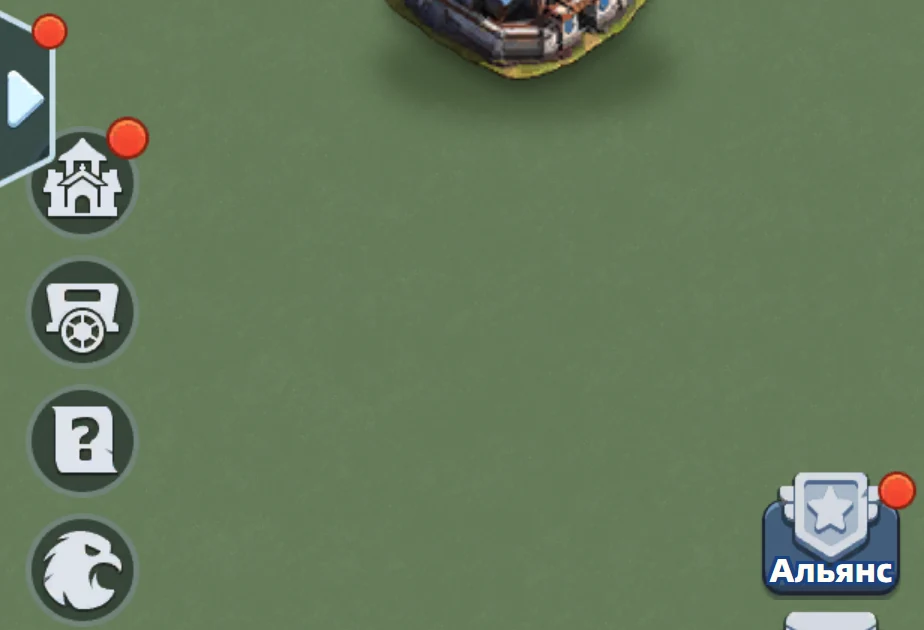
Нажми кнопку с тележкой
Она слева, в столбике круглых кнопок, — вторая сверху. Откроется окно «Караванная торговля».
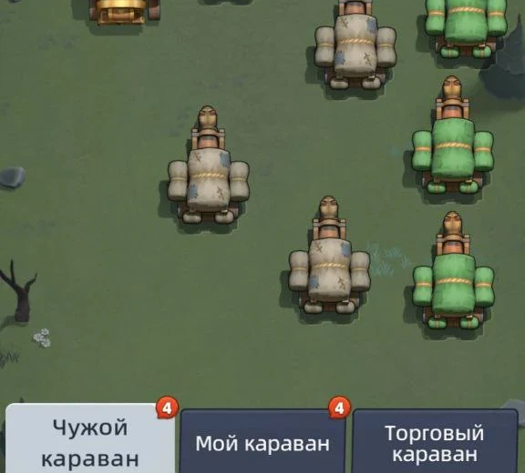
Вкладка «Чужой караван»
Вкладки вверху окна:
- Чужой караван — чужие повозки, их можно грабить. Нужна эта.
- Мой караван — твои повозки.
- Торговый караван — караван альянса с кучером и пассажирами.
Галочка «Исключать караваны вашего королевства»
Она сразу под строкой «Грабежей сегодня». Зелёная галочка должна стоять. Тогда повозки нашего сервера 397 в окне не показываются, и ограбить своего случайно не выйдет.
Галочки нет — нажми на квадратик. Снимать её нельзя никогда.

Нажми на повозку — внизу карточка
Сверху в карточке ник: «#398 [XYZ]Player». Здесь #398 — номер сервера, в скобках альянс, дальше ник. Справа — сама повозка, ниже — что она везёт.
Если номер сервера не 397 — жми красную кнопку «Грабеж».
Что важно знать про грабёж
4 удачных грабежа в день. Неудачная атака попытку не тратит. Удачный грабёж забирает 3 случайных груза. Личную повозку можно ограбить 2 раза, альянсовую — 3 раза. За бой у личного каравана солдаты не гибнут и не ранятся.
Как не дать ограбить свои
В охрану ставь самый сильный отряд. Повозка едет 4–5 часов. Обновляй её торговыми договорами: после 5 обновлений будет золотая. Золотую держи до вторника — день 2 Дуэли, это 100 000 очков. Запасной день — суббота.
Секретные операции: что это и кого можно грабить
Секретная операция — задание с таймером. Отправляешь героев, ждёшь, забираешь награду (часто противоядие и фрагменты). Отряд при этом не занимает место в походах: каждая очередь похода тянет 2 задания одновременно. Кнопка — прямо под кнопкой караванов, окно называется «Центр тайных операций».
В окне две вкладки: «Отряд Тайных операций» (задания) и «Искатель сокровищ» (фрагменты карты). Над заданиями — «Ежедневная помощь: 5/5» и «Ежедневный грабеж: 2/5»: сколько раз сегодня ты уже помог союзникам и ограбил чужих. Ниже «Личное задание» / «Задания альянса» и карточки заданий: цвет полоски — редкость (синяя, фиолетовая, золотая), под ней награды, палец вверх — самое выгодное.
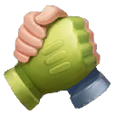

Как обновлять задания, чтобы было выгодно
Пока хоть одно задание не запущено, можно нажимать обновление: шанс синего задания 68%, фиолетового 24%, золотого 8%. Красная звезда у задания значит, что оно уже лучшее и обновить его нельзя.

Не обновляй просто так. В Дуэли альянсов есть день, когда очки дают только за золотые секретные операции (75 000 за каждую). Поэтому «Тайные приказы» береги, чтобы к этому дню выбить и держать золотую до вторника, а не тратить их на синие и фиолетовые.
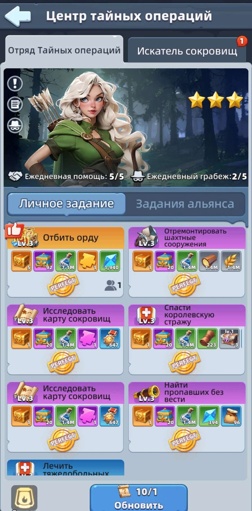
«Центр тайных операций». Рамки: сколько грабежей сегодня осталось и «Обновить».
Как выглядит твоя секретная операция на карте

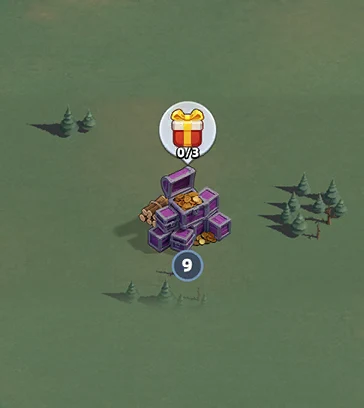

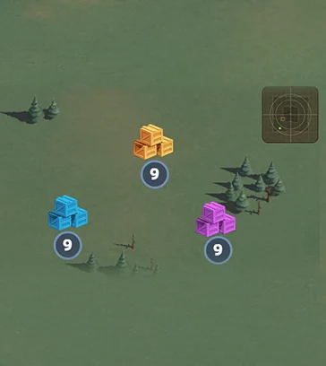

Забирай вовремя. Игра пишет: «Когда до завершения секретной операции останется менее 10 минут, она станет видна всем». С этого момента её могут ограбить — поэтому не оставляй готовую операцию на карте.
 синиефиолетовыезолотыецвет ящиков — редкость задания (чем «дороже» цвет, тем лучше добыча)
синиефиолетовыезолотыецвет ящиков — редкость задания (чем «дороже» цвет, тем лучше добыча)Как грабить секретные операции — с самого начала
Грабить можно только на карте чужого сервера. Попасть туда проще всего через караван — так и делаем.
Открой караваны
Круглая кнопка с тележкой слева на главном экране → окно «Караванная торговля» → вкладка «Чужой караван».
Проверь галочку
«Исключать караваны вашего королевства» — зелёная галочка должна стоять. Тогда в списке только чужие повозки, своих не заденешь.
«Грабеж» у чужой повозки
Нажми на повозку с номером сервера не 397 и красную кнопку «Грабеж». После грабежа игра перенесёт тебя на карту того сервера, по которому едет повозка.

Ты на чужом сервере
Сверху жёлтая полоса «Королевство» с номером (на картинке S13) — значит, все секретки вокруг чужие. Вернуться домой — синяя стрелка справа на этой полосе.
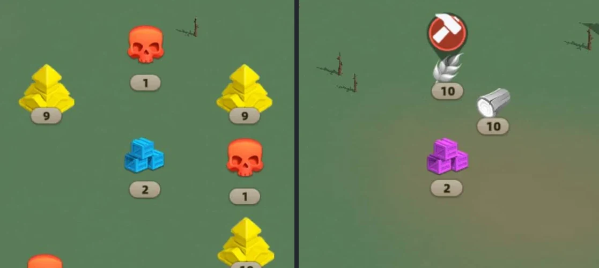
Найди ящики на карте
Издалека секретная операция — стопка ящиков с цифрой (уровень). Цвет — редкость задания: синие, фиолетовые, золотые (у золотых добыча лучше всего). Жёлтые пирамидки — ресурсы, красные черепа — монстры.

Приблизь карту — над сундуком рука
Кружок с рукой — эту операцию можно ограбить. Цифра под рукой — сколько раз её уже ограбили: «0/3» — ни разу, «1/3» — один раз. Одну операцию грабят не больше трёх раз. Рукопожатие вместо руки — операция союзника, ей можно только помочь.
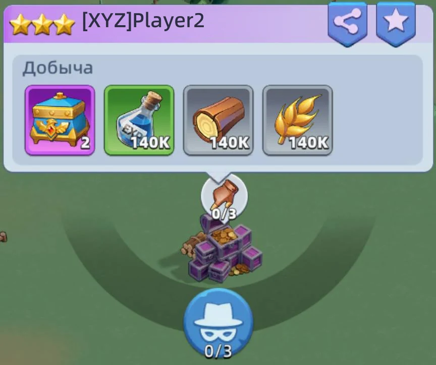
Нажми на руку — посмотри добычу и грабь
Сверху владелец и звёзды (сложность задания), ниже «Добыча» — что получишь. Синяя кнопка с маской под сундуком — это и есть грабёж: нажми и отправь героев.
5 грабежей в день — трать их на фиолетовые и золотые. Владельцу придёт отчёт о краже, поэтому свои операции забирай вовремя.
Почему только с чужой карты. У караванов есть галочка «прятать своих», а у секретных операций такой галочки нет. Поэтому правило простое: на карте своего сервера чужие сундуки не трогаем вообще.
Дополнительные способы попасть на чужой сервер
Основной способ — через караван, он расписан выше в «Как грабить секретные операции». Ниже — ещё два.
Через Войну королевств
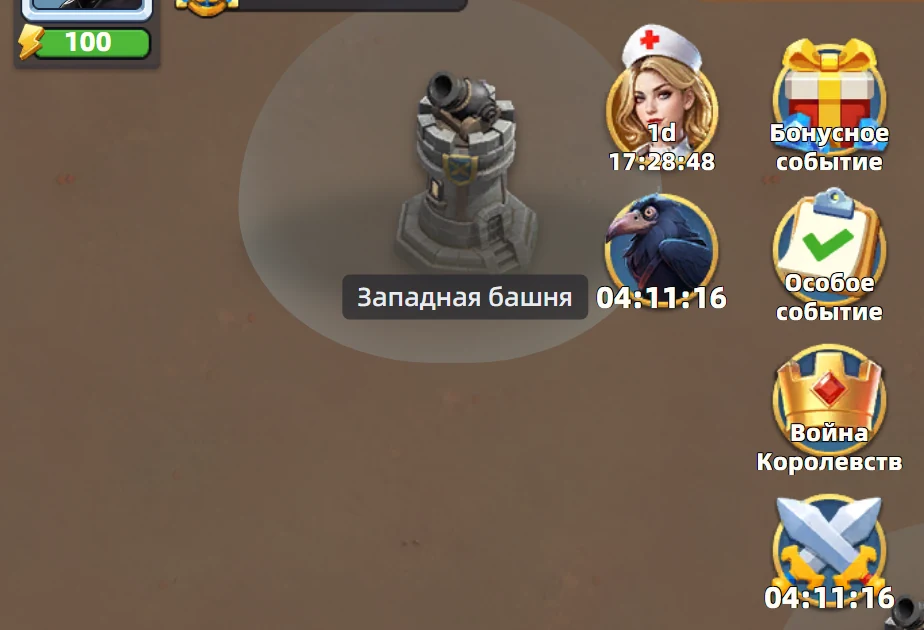
Значок «Война Королевств»
Золотой щит с короной справа на главном экране. Откроется окно Войны королевств.

«Данные матча» → «Группировка»
Третья сверху, справа.
Значок с тремя кружками внизу посередине. Откроется список серверов твоей группы. На сетке наш сервер синий, сервер, с которым воюем на этой неделе, — красный.
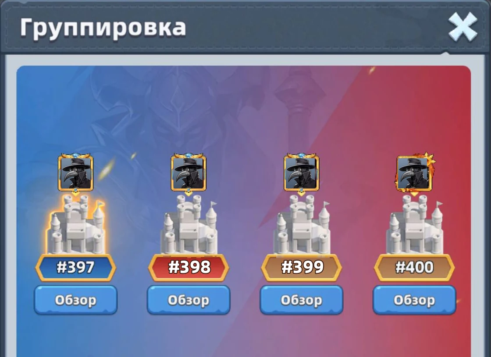
«Группировка» → «Обзор» у сервера-врага
В окне все серверы нашей группы. #397 на синей плашке — наш, на красной — сервер, с которым воюем на этой неделе, остальные — коричневые. Под каждым кнопка «Обзор»: нажми её у красного — откроется карта этого сервера. Вернуться — кнопкой «домой» слева внизу.
Через Дуэль альянсов
В окне Дуэли альянсов есть кнопки «Перейти» (на сервер альянса-соперника на этой неделе) и «Вернуться». Удобно, чтобы грабить именно соперника по Дуэли.
Новый персонаж на другом сервере
Это не переезд, а второй персонаж с нуля. Основной город никуда не девается.
Слева вверху экрана.
На одном сервере может быть только 1 персонаж. Переключаться — в этом же окне.

Привяжи аккаунт (Google и т. п.), иначе прогресс можно потерять. Перенести город на другой сервер «за деньги» или «по паролю» игра не умеет — кто так предлагает, тот мошенник. Пароль никому не давай.
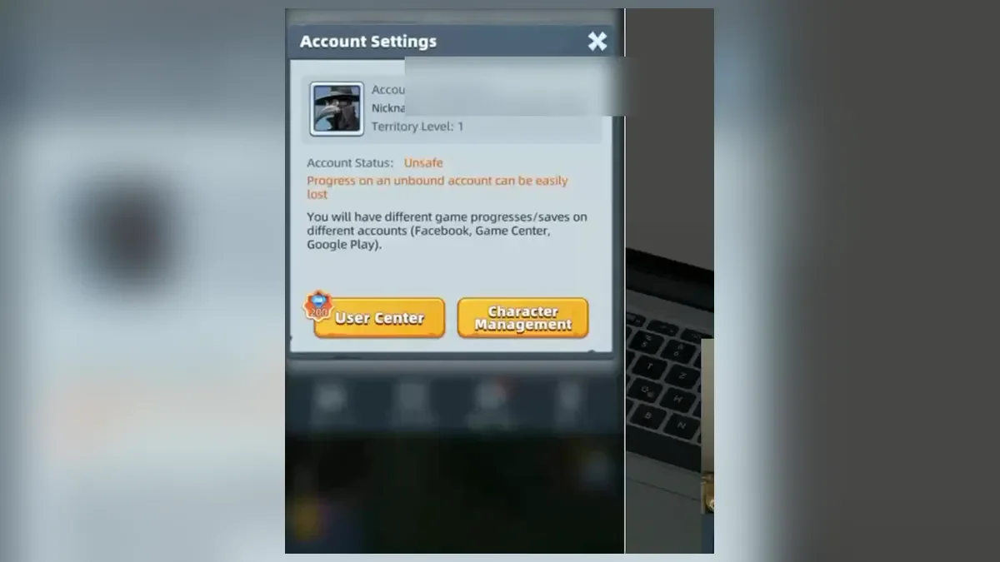
Окно «Настройки аккаунта». «Статус аккаунта: В безопасности» — аккаунт привязан. Справа внизу — «Управление персонажами» (рамка).